HOME > 회사소개 > 연혁
연혁History
도전으로 쌓아온 발자취, 더 건강한 내일을 향해 혁신을 이어갑니다
1960년
- 1963-07
활성지속성 비타민 ‘아로나민’제조, 발매 - 1959-08
국내 최초 유산균 영양제 ‘비오비타’ 발매 - 1942-05
일동제약주식회사로 상호 변경 - 1941-03
극동제약 주식회사 설립 (서울 종로 4가 75번지)
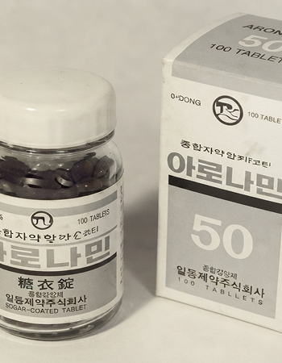
1970년
- 1976-03
美 화이트홀社 와 사업제휴, 총판계약 체결 - 1975-10
자본금 10억 원으로 기업 공개 - 1973-12
암포젤엠,아티반,오부라0.25, 옥사인 엠 등 생산 판매로 치료제 전문메이커 발판 구축 - 1972
국내최초 캠페인 광고 ‘의지의 한국인’ 시리즈 - 1970-04
‘아로나민골드’ 발매
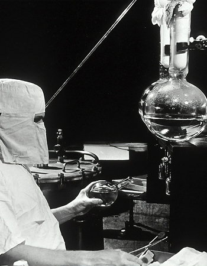
1980년
- 1988-12
안성 KGMP 적격업소 지정 - 1987-09
안성 GMP공장 완공 - 1986-03
소화성궤양 치료제 ‘큐란'(라니티딘염산염) 발매 - 1982-10
옥사세펨계 항생물질제제 ‘시오마린' 제조, 발매 - 1982-06
일동제약중앙연구소 설립
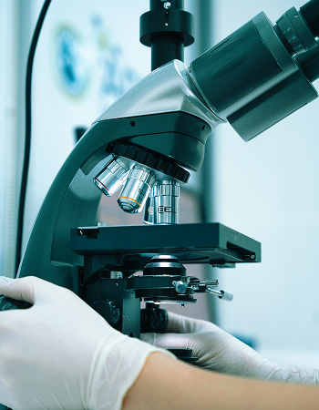
1990년
- 1999-12
용인중앙연구소 준공, 이전 - 1997-04
잇몸질환 예방 구강청결제 ‘센스타임' 발매 - 1997-02
日 아지노모토社 와 새 당뇨병 치료제 한국 내 독점판매 계약 체결 - 1996-11
기업 CI 재정립 - 1996-07
남양산업주식회사 인수 후 일동후디스㈜로 사명변경 - 1995-02
퀴놀론계 항균제 ‘레보플록사신' 국내 최초 제조, 발매 - 1994-02
재단법인 송파재단 설립 - 1992-11
종합광고 대행사 유니기획 설립 - 1992-06
본사 사옥 신축 이전 서울특별시 서초구 양재동 60번지
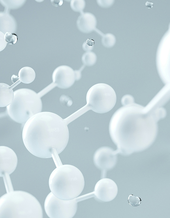
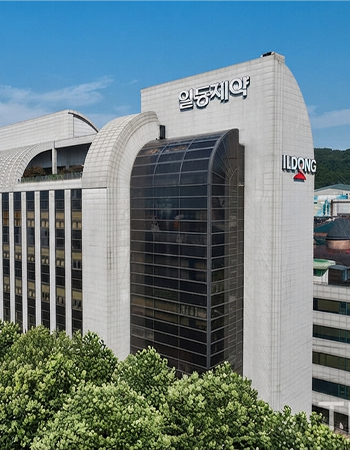
2000년
- 2009-11
미생물 배양에 의한 초고분자 히알루론산 생산방법 개발 및 상용화 - 2009-10
비오비타 탄생 50주년 - 2009-04
바르는 비타민 C ‘바비씨퓨어세럼' 발매 - 2008-06
중앙연구소, 동탄 신도시내 신축 및 이전 - 2007-01
유통전문회사 일동생활건강㈜ 설립 - 2005-12
경구용 세펨계 항생제 ‘후로목스' 발매 - 2005-09
유기농 탐폰, 천연생리대 ‘나트라케어' 발매 - 2002-12
천연물신약 벤처기업 팬제노믹스와 전략적 제휴 체결 - 2002-03
日 시오노기社와 4세대 경구용 세펨계 항생제 ‘후로목스' 국내 독점 계약 체결 - 2002-02
청주공장 BGMP 적격업소 지정 - 2000-10
유전자 조작 EPO 생산세포주 세계최초 개발, 국내특허 취득
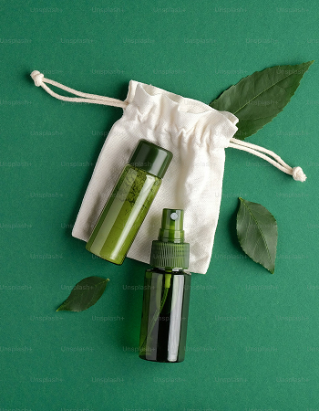
2010년
- 2019-10
한국경영인증원 품질경영대상 명예의 전당 기업에 선정 - 2019-09
아로나민 케어 시리즈 출시 - 2018-05
창립 77주년, 비전 선포 - 2017-12
공정거래위원회 2017년 CP등급평가 'AA' 획득 - 2017-05
만성B형간염치료제 베시보정 신약 허가 - 2016-01
아로골드D 발매, 음료사업 본격화 - 2014-06
습윤 드레싱제 메디터치 발매 - 2013-06
4중코팅 프로바이오틱스 개발 - 2012-11
美 아레나제약 비만치료제 벨빅 국내 독점 공급 계약 체결 - 2012-09
B형 간염치료 신약(베시포비어) 라이선스 계약 체결 - 2012-02
아로나민 신포장 발매 - 2011-11
치매에 효과적인 유산균 발효물질 관련 특허 등록 - 2010-07
홈페이지 다국어 서비스 시작(국문, 영문, 중문, 일문) - 2010-03
세파계 항생제 新공장 KGMP 승인
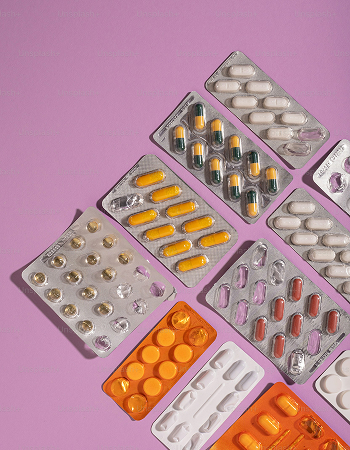
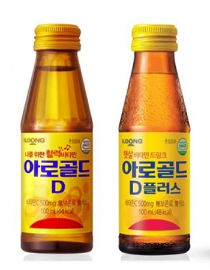
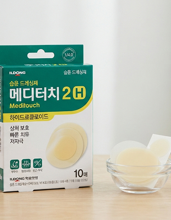
2020년
- 2025-12
보건복지부 주관 ‘지역 사회 공헌 인정 기업’으로 선정 - 2025-11
PDRN 성분 화장품 ‘리쥬닉 크림’ 약국 출시 - 2025-07
동전파스 ‘로이히츠보코’ 국내 정식 출시 - 2025-03
한국메나리니와 ‘더마틱스®’ · ‘풀케어®’ 파트너십 체결 - 2024-09
일동제약 청주공장, 친환경 태양광 발전 설비 구축 - 2023-12
'소비자중심경영(CCM)' 인증 취득 - 2022-03
‘아로나민’, 9년 연속 브랜드파워 1위 - 2021-11
시오노기제약과 경구용 코로나치료제 공동개발 착수 - 2021-10
일동홀딩스 · 일동제약, ESG 평가 A등급 획득 - 2021-05
UN 우수사례 국제환경인증 GRP AA+ 등급 획득 - 2021-01
일동제약그룹 아이디언스, 400억 투자유치 최종 완료 - 2020-12
편두통 신약 라스미디탄(라이선스품목) 가교3상 완료 - 2020-06
비오비타 리뉴얼 발매 - 2020-03
독일 에보텍과 신약개발 제휴 체결 - 2020-01
엠디뮨과 바이오 드론 활용 혁신 항암제 공동 연구개발 협약
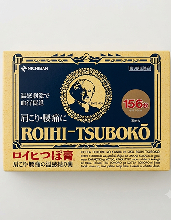
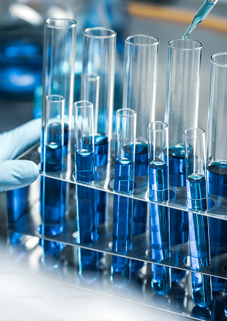
2026년
- 2026-03
아이디언스 표적항암제 베나다파립, FDA ‘패스트트랙’ 지정 - 2026-02
일동제약그룹 윤원영 회장, ‘대한민국 약업대상’ 수상 - 2026-02
일동제약그룹 일동생활건강, ‘일동헬스케어’로 사명 변경
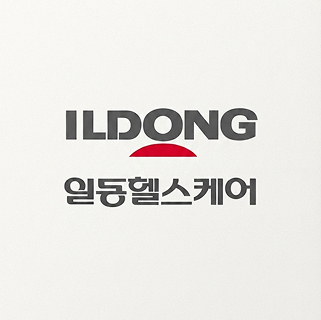